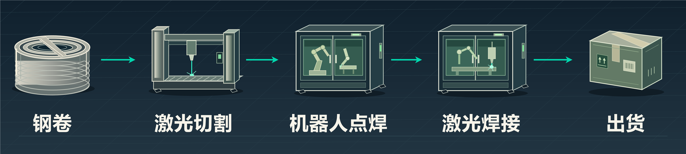

激光落料线
01
标准产量 1,320件
今日产量 1,280件
本月产量 32,450件
不良品数 18件 1.4%
运行状态 运行中 96%
机器人电焊线
02
标准产量 980件
今日产量 960件
本月产量 25,180件
不良数 22件 2.3%
设备状态 运行中 94%
激光拼焊线A
03
标准产量 1,450件
今日产量 1,420件
本月产量 38,960件
不良品数 15件 1.1%
设备状态 运行中 97%
激光拼焊线B
04
标准产量 1,400件
今日产量 1,360件
本月产量 36,720件
不良率 2.8%
设备状态 待机维护 91%
原材料+半成品库存
原材料库存
41.5 卷
半成品库存
29,954 个
原材料明细
| 物料 | 仓库 | 规格 | 备注 | 库存 | 重量 | 可切 |
|---|---|---|---|---|---|---|
| 钢卷 | 原材料仓库 | 1.6*1430/ | A柱 | 16卷 | 185,370 | — |
| 钢卷 | 原材料仓库 | 1.6*1142 | A柱 | 0卷 | 0 | — |
| 钢卷 | 原材料仓库 | 1.8*1245 | B柱 | 5卷 | 61,210 | — |
| 钢卷 | 原材料仓库 | 1.8*1300 | 补丁板 | 9卷 | 110,850 | — |
| 钢卷 | 原材料仓库 | 1.4*1002 | A柱下 | 0卷 | 0 | — |
| 钢卷 | 原材料仓库 | 1.4*1004 | A柱下 | 4卷 | 43,220 | — |
| 钢卷 | 原材料仓库 | 1.4*1414 | 门槛 | 7卷 | 82,720 | — |
| 钢卷 | 原材料仓库 | 1.2*1250 | 试机料 | 0.5卷 | — | — |
半成品明细
| 类别 | 物料 | 仓库 | 规格 | 库存 |
|---|---|---|---|---|
| 左件 | 门槛左件 | 半成品仓库 | 1.4 | 2,977个 |
| A柱下左件 | 半成品仓库 | 1.4 | 2,563个 | |
| A柱左件 | 半成品仓库 | 1.6 | 2,895个 | |
| B柱左件 | 半成品仓库 | 1.8 | 1,623个 | |
| 补丁板左件 | 半成品仓库 | 1.8 | 4,410个 | |
| 右件 | 门槛右件 | 半成品仓库 | 1.4 | 4,854个 |
| A柱下右件 | 半成品仓库 | 1.4 | 2,030个 | |
| A柱右件 | 半成品仓库 | 1.6 | 2,249个 | |
| B柱右件 | 半成品仓库 | 1.8 | 1,157个 | |
| 补丁板右件 | 半成品仓库 | 1.8 | 5,196个 |
30天内产线产量趋势图
当月销售出货统计
本月订单数
134,490
本月累计出货
37,400
出货达成率
27.81%
实时数据总览
总计划产量
8,600件
实际完成
6,010件
综合达成率
70%
设备综合效率
95%
品质合格率
98.6%
平均产出
45件/时

安全生产天数
368天
连续安全运行